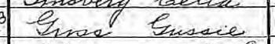
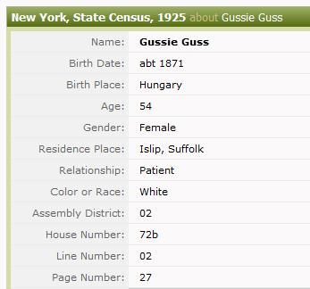

Dedicated to my Great Grandmother, Gussie Gross.
Central Islip State Hospital patient, March 5, 1921 - January 6, 1946.
|
• Background • Re-transcription Project • Data Analysis • Searching the Database • Selected Bibliography • Cemetery • Volunteers |
Opened in 1889 as the New York City Farm for the Insane, Central Islip State Hospital (CISH) became the largest psychiatric institution in New York State and perhaps the world. An 1896 Legislative Act transferred New York City Asylums to New York State under the name Manhattan State Hospital at Central Islip. Facilities increasingly expanded to the extent that they functioned as a small self-contained city including a Long Island Railroad spur, farm, firehouse, etc. The patients are of significant interest to researchers. The 1925 New York State census represents the hospital during a peak period. In 1996, New York State closed the hospital as part of the restructure of the care of psychiatric patients.
When this project commenced, there was not an index to names for those enumerated in the New York State 1925 census. The only way to find a specific person was to scroll through microfilm for the 121 pages of the census representing 6,017 lines of census data that includes patients and resident employees.
Conducted under the auspices of the Jewish Genealogy Society of Long Island (JGSLI), volunteers were solicited to transcribe the census into an Excel spreadsheet containing each column of data. Some census columns were deconstructed into multiple columns, to permit better search capability and analysis of the data.
When approximately half of the data was transcribed, Ancestry.com released a transcribed database and the images on their subscription website. After debate, consultation, and searches, it was determined that there were significant errors in the Ancestry.com transcription which inhibited researchers. One such example is my great grandmother, Gussie Gross, who is enumerated on page 27 line 2, and transcribed as "Gussie Guss". As such, she could not be located in a typical soundex search.
Much to the favor of the re-transcription project, the entire institution was enumerated by one person, namely, Catherine Graham. Therefore, there were considerable opportunities to "understand" her handwriting and make judgments in discrepancies that were hopefully accurate.
That being said, this re-transcription will still contain errors. An attempt was made to remain faithful to the spelling as handwritten rather than allow common sense to make the decision. In many cases, it was felt that the error was made from the original source to Catherine Graham's enumeration. Again, decisions were made as faithful to the census recording as possible.
|
 Above: Original Census Image Source Citation: New York State Archives, Albany, New York:At Right: Ancestry.com's Transcription Retrieved from Ancestry.com February 10, 2013. |
 |
With assurance from JewishGen.org that they would host the re-transcribed CISH database within their "JewishGen USA Database", the project proceeded to its conclusion. It is particularly noteworthy that the Jewish population was presumed to be relatively small, perhaps 10%. Furthermore, this project was a full transcription of the census which frequently includes an address as well as the place and date of naturalization. Both of these items are significant to genealogy researchers.
| Discrepancy | Frequency |
|---|---|
| JGSLI | 1,286 |
| Ancestry.com | 951 |
| split | 107 |
| TOTAL | 2,344 |
There are 6,017 lines of census data, which includes both employees and patients. Each volunteer's transcription was compared with that of Ancestry.com. There was a discrepancy in 2,344 given or surname items, representing 39% of the census of Central Islip State Hospital. The frequency of the adjudication is described in the table below. There were 107 instances where there was a discrepancy split between the given and surnames with one of each favoring either JGSLI or Ancestry.com.
Although identifying patients as Jewish is not explicitly stated in this census, we created two frequency tables — for the most commonly occurring surnames, and for countries of origin for those not born in the United States — which appear below. The data in these two tables represent patients only; employees were excluded from these counts.
| Surname | Frequency |
|---|---|
| SMITH | 41 |
| MILLER | 30 |
| BROWN | 26 |
| KELLY | 20 |
| SULLIVAN | 20 |
| WHITE | 20 |
| WALSH | 19 |
| JOHNSON | 18 |
| WILLIAMS | 18 |
| COHEN | 16 |
| JONES | 15 |
| LEVINE | 14 |
| MARTIN | 14 |
| MURRAY | 14 |
| HOFFMAN | 13 |
| MURPHY | 13 |
| WEISS | 13 |
| RYAN | 12 |
| THOMPSON | 12 |
| CARROLL | 11 |
| KLEIN | 11 |
| MC CARTHY | 11 |
| SCHMIDT | 11 |
| CLARK | 10 |
| DALY | 10 |
| FRIEDMAN | 10 |
| GOLDSTEIN | 10 |
| HARRIS | 10 |
| JACOBS | 10 |
| O'BRIEN | 10 |
| SCHNEIDER | 10 |
| Country | Frequency |
|---|---|
| Russia | 543 |
| Ireland | 513 |
| Germany | 455 |
| Austria | 287 |
| Italy | 267 |
| Hungary | 137 |
| Poland | 98 |
| England | 92 |
This data can be searched via the JewishGen USA Database.
Database Column Headings:
The following column headings appear in the search results of the
|
|
Search Strategies: Should an exact name search or a soundex not return an expected result, consider the following search strategies or alternatives:
1925 New York State Census, New York State, Suffolk County, Town of Islip, AD 2, ED 15, Sheets 8-129. New York State Library, Albany, NY.
Knapp, Florence E. S. Census of 1925, regulations and instructions. New York State Library Digital Collections. New York State Government Documents. Department of State. Available as a PDF document via the New York State Library Digital Collections: http://www.nysl.nysed.gov/. Retrieved February 14, 2013.
Pulling, Sr. Anne Frances. Around Central Islip. Dover, NH: Arcadia Publishing 1998.
Pulling, Sr. Anne Frances. Central Islip, My Home Town. Central Islip, NY: Jo-Lar Lithographing 1976.
Patient Records are held by the New York State Office of Mental Health. Contact this agency for information regarding patient records. http://www.omh.ny.gov/omhweb/contact. Expect to encounter limited access due to privacy issues.
Pre-1980 burials of indigent patients were on Central Islip State Hospital grounds. Grave markers bore only the last four digits of the patient number, not the name. These gravestones are now underground (they have sunk and become grassed over) and only a few are visible. There is a maintained dedicated Jewish cemetery portion. The gravestones have been photographed and entered into the JewishGen Online Worldwide Burial Registry (JOWBR), hosted by www.JewishGen.org. The cemetery is maintained by New York State and kept locked. For entrance, contact Rabbi Melvyn Lerer (631) 761-2825. The Men's Club of the North Shore Jewish Center, Port Jefferson Station, NY makes an annual pilgrimage to the cemetery as a community service project.
Much appreciation is offered to the dedicated group of volunteer transcribers. A special thank you is offered to Ava Gorkin, Susan Kalish and Amanda Rodriguez, who continuously offered to take on more groups of pages to transcribe.
The transcribers, in alphabetical order, are: Carol Abrahamer, Diane Berg, James Boeri, Jennifer Buonasera, Marianne Callahan, Jessica Cavanagh, Jennifer DiGrazia, Les Goldschmitt, Ava Gorkin, Diane Haberstroh, Susan Kalish, Krystal Michelsen, Kayla Mueger, Karen Munoz, Charles Olsen, Matthew Ostermann, Catherine Pattay, Samantha Polistina, Deborah Pomeraenke, Kiran Ram, Toni Raptis, Amanda Rodriguez, Bonnie Schwartz, Jane Ventimiglia, Kristin Smith, Beverly Weinberg, Chuck Weinstein, Jessica Witt, Patrick Wood, and Barbara Zimmer.